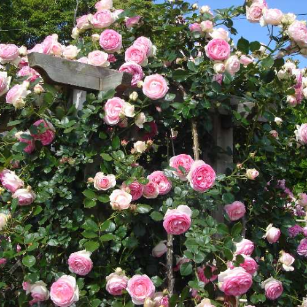
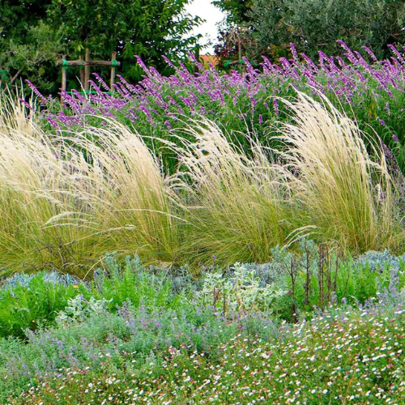
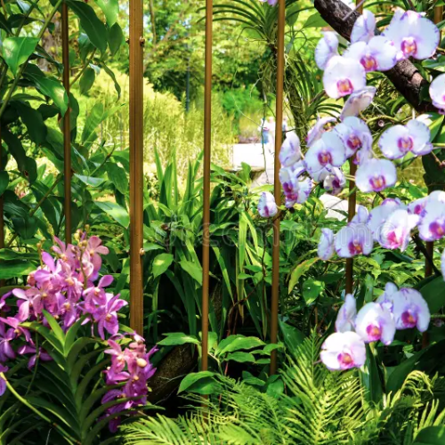
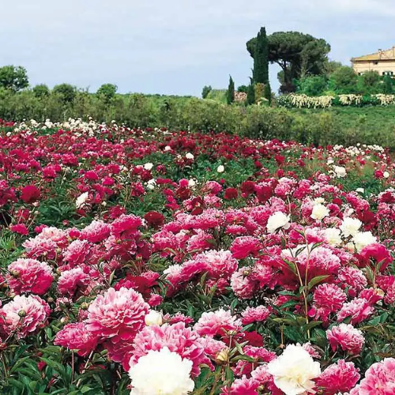
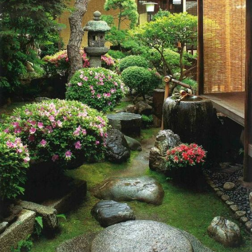
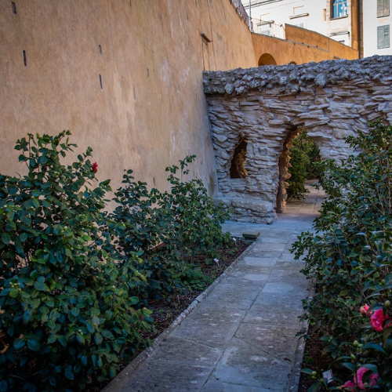
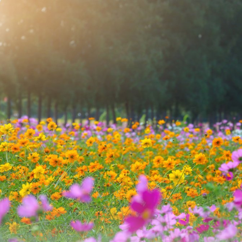
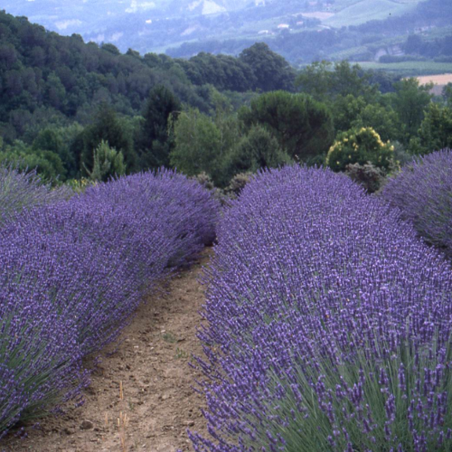

Trasforma il tuo giardino in un angolo di paradiso con le proposte di Verde Incantato. Creiamo giardini fioriti su misura, con una selezione di piante e fiori che sbocciano in ogni stagione, regalando colore e armonia. Ogni progetto è pensato per valorizzare al massimo gli spazi, creando un'oasi di bellezza e serenità.

Un giardino elegante e profumato, dove le rose di ogni colore regalano bellezza e armonia.

Un angolo di sole con piante aromatiche e fiori tipici della tradizione mediterranea, ideali per terreni caldi e secchi.

Un giardino esotico con orchidee dalle forme e dai colori sorprendenti, per un tocco di lusso e raffinatezza.

Un giardino romantico e rigoglioso, dove le peonie fioriscono in tutta la loro bellezza, ideale per i giardini primaverili.

Un angolo di pace e meditazione, dove piante minimaliste e fiori delicati si combinano per creare un ambiente sereno e rilassante.

Un giardino elegante e raffinato, dove le camelie fioriscono con colori brillanti durante l'inverno e la primavera.

Un giardino naturale e spontaneo, dove i fiori selvatici crescono liberamente, creando un ambiente rustico e affascinante.

Un giardino profumato e colorato, dove le lillà si mescolano alla lavanda creando un ambiente fresco e rilassante.
Verde Incantato
P.IVA 02134920687